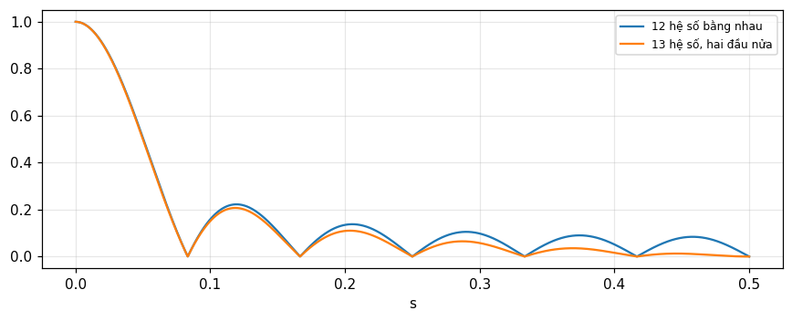
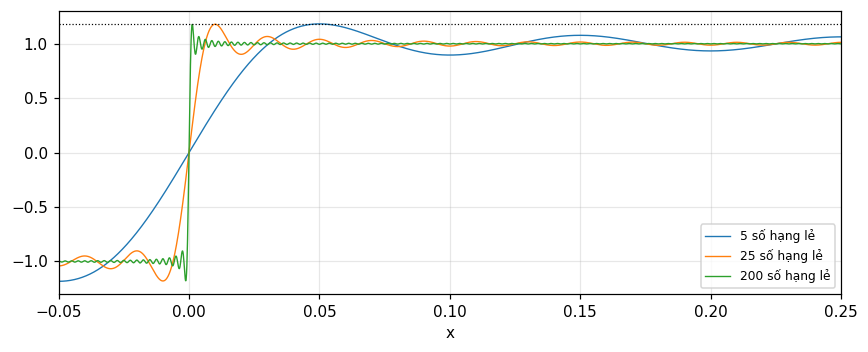
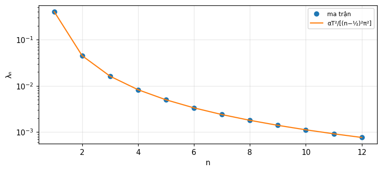

Lấy mẫu, chuỗi Fourier và biểu diễn trực giao
Định lý lấy mẫu, nội suy, lọc chữ nhật, chồng phổ, lấy mẫu có đạo hàm và xen kẽ, chuỗi Fourier và Gibbs (Bracewell) tới chuỗi Fourier tổng quát, Gram-Schmidt, phương trình tích phân và khai triển Karhunen-Loève (Barkat).
Bài giảng (slide) Thực hành với Jupyter Notebook Quiz tự kiểm tra
Bài giảng (slide)
Lấy mẫu, chuỗi Fourier và biểu diễn trực giao
- Phát biểu và chứng minh định lý lấy mẫu bằng biểu tượng shah; nội suy sinc; nhận biết chồng phổ và các trường hợp biên (điều hòa đúng tần số cắt).
- Dùng lấy mẫu có đạo hàm, lấy mẫu xen kẽ, và biết vì sao chúng khuếch đại nhiễu.
- Xem chuỗi Fourier là biến đổi ở giới hạn; tính hệ số bằng biến đổi hữu hạn và giải thích Gibbs 9 phần trăm.
- Khai triển tín hiệu theo hệ trực chuẩn, sai số năng lượng, Gram-Schmidt (cổ điển và cải tiến), biểu diễn hình học trong không gian tín hiệu.
- Chuyển phương trình vi phân thành phương trình tích phân qua hàm Green, và dùng Karhunen-Loève cho quá trình ngẫu nhiên (Wiener, mũ, nhiễu trắng).
Dùng nút, chấm tròn hoặc phím ← → để chuyển slide.
Định lý lấy mẫu và nội suy
- Phát biểu và chứng minh
- Nội suy và lọc chữ nhật
- Trung bình trượt, chồng phổ
Vì sao có thể lấy mẫu
Trong tự nhiên luôn có giới hạn tốc độ biến đổi, nên giá trị các thời điểm lân cận có liên hệ và có thể dự đoán qua một khoảng ngắn. Vậy có thể bỏ giá trị trong các khoảng cùng cỡ mà vẫn giữ gần hết thông tin bằng cách ghi tập giá trị cách nhau mịn nhưng không vô cùng nhỏ (Bracewell, chương 10, tr. 219). Định lý lấy mẫu nói rằng, với một điều kiện, có thể khôi phục đầy đủ giá trị nằm giữa các mẫu; điều kiện là hàm phải giới hạn băng. Xử lý tín hiệu số áp dụng được cho tập mẫu, còn lý thuyết hàm biến liên tục làm sáng tỏ nền tảng của DSP (tr. 219).
Khoảng lấy mẫu thô một cách đáng ngạc nhiên
Với \text{sinc}\,x, phổ phẳng khi |s|<\tfrac12 và bằng 0 ngoài đó; khoảng lấy mẫu suy ra là 1, rất thô so với khoảng ta chọn theo trực giác khi tích phân số (hình 10.1, tr. 220). Mẫu của \text{sinc}\,x tại các số nguyên là 1,0,0,\ldots và của \text{sinc}^2\tfrac12x (cùng tần số cắt \tfrac12) cũng thô như vậy. Nhưng biến đổi hầu như không bao giờ cắt tuyệt đối, nên khi dùng định lý ta phải ước lượng sai số của việc coi dạng sóng là giới hạn băng (tr. 220). Số đo: tái tạo f=\text{sinc}^2(x/2) (phổ 2\Lambda(2s), cắt tại \tfrac12) từ mẫu ở số nguyên, tại x=0.5, lệch 3e-12 so với giá trị đúng.
Biến đổi bị cắt
f(x) có biến đổi F(s)=0 khi |s|>s_c là hàm giới hạn băng; biến đổi có dạng \Pi(s/2s_c)G(s) với G tùy ý gọi là biến đổi bị cắt, và các hàm có dạng \text{sinc}\,2s_cx*g(x) với g tùy ý. Tính chất kỳ lạ: các hàm giới hạn băng được xác định đầy đủ bởi giá trị cách đều không quá \tfrac1{2s_c}, trừ trường hợp ngoại lệ (tr. 221). Chứng minh dùng biểu tượng shah vì nhân với \text{III}(x) tương đương lấy mẫu: giữ thông tin tại điểm mẫu và bỏ ở giữa; và \text{III}(x)\supset\text{III}(s).
Chứng minh bằng shah: sao chép phổ
Hàm lấy mẫu f(x)\text{III}(x/\tau)=\sum f(n\tau)\delta(x-n\tau) chỉ giữ thông tin tại x=n\tau. Biến đổi của \text{III}(x/\tau) là \tau\text{III}(\tau s), hàng xung đơn vị cách nhau \tau^{-1}; theo định lý tích chập f\,\text{III}(x/\tau)\supset\tau\text{III}(\tau s)*F(s): lấy mẫu sao chép phổ F với chu kỳ \tau^{-1} (Bracewell, tr. 221 đến 223). Ta khôi phục f nếu khôi phục được F, bằng nhân với \Pi(s/2s_c). Không thể nếu các "đảo" chồng nhau, tức khi \tau^{-1}<2s_c: \tau\le1/2s_c, và lấy mẫu tới hạn là các đảo vừa chạm nhau (hình 10.3, 10.4).
Trường hợp biên: điều hòa ở đúng tần số cắt
Nếu F(s_c)\ne0 và lấy mẫu tới hạn, các đảo chạm nhau tại vách; nhân với \Pi(s/2s_c) (bằng \tfrac12 tại s=s_c) vẫn khôi phục chính xác. Nhưng nếu f chứa một thành phần điều hòa tần số s_c thì có thêm điều cần nói: phần chẵn (cosin) khôi phục được, phần lẻ (sin) biến mất vì các xung B và B' hợp lại và triệt nhau (tr. 223 đến 224). Định lý phát biểu đầy đủ: hàm có biến đổi bằng 0 khi |s|>s_c được xác định bởi các giá trị cách đều không quá \tfrac1{2s_c}, trừ mọi số hạng điều hòa có không điểm tại các điểm lấy mẫu. Bài tập: \cos(\omega t-\phi) lấy mẫu ở khoảng tới hạn (nửa chu kỳ): các mẫu chỉ là của phần chẵn \cos\phi\cos\omega t; số đo lệch 6e-13.
Nội suy
Phép nhân biến đổi với \Pi(s/2s_c) ứng với chập với 2s_c\,\text{sinc}\,2s_cx ở miền hàm, cho f(x) trực tiếp từ \text{III}(x/\tau)f(x): tích chập với hàng xung rút gọn đúng về một tổng (tích chuỗi): f(x)=\sum f(n\tau)\,\text{sinc}\,\dfrac{x-n\tau}{\tau} (tr. 224). Nội suy điểm giữa dùng bảng 10.1 các giá trị \text{sinc}\,x tại nửa nguyên: 0.6366, -0.2122, 0.1273, -0.0909, 0.0707, \ldots; số đo: \text{sinc}(0.5) = 0.6366, \text{sinc}(1.5) = -0.2122, \text{sinc}(2.5) = 0.1273, \text{sinc}(3.5) = -0.0909.
Lọc chữ nhật ở miền tần số bằng tổng sinc
Muốn bỏ thành phần tần số vượt giới hạn, nhân biến đổi với \Pi(s) (s_c=\tfrac12, khoảng tới hạn 1). Với khoảng lấy mẫu \tau=1 ta được \sum f(n)\text{sinc}(x-n) không lọc gì cả (f(x) nguyên vẹn); với \tau=\tfrac12 phổ đầu ra gồm F\,\Pi cộng các phần xa hơn, đủ dùng khi các thành phần cần bỏ nằm ngay ngoài vùng trung tâm. Dùng lặp lại cùng mảng ở \tau=\tfrac12 đẩy thấp thêm các đảo ngoài (hình 10.5). Kết quả: đọc f ở nửa khoảng tới hạn rồi lấy tích chuỗi với 2s_c\text{sinc}\,2s_cx tại mọi giá trị nửa nguyên của 2s_cx; mảng lọc (bảng 10.2) gồm các giá trị nội suy cộng các số 0 xen kẽ và giá trị 1 ở giữa: \ldots,-0.2122,0,0.6366,1,0.6366,0,-0.2122,\ldots (tr. 224 đến 226).
Trung bình trượt: hàm truyền của N hệ số
Chập với chữ nhật rộng W có hàm truyền \text{sinc}\,Ws, độ rộng băng tương đương 1/W và độ rộng băng 3 dB bằng 0.8859/W, nhưng suy giảm không đủ sắc và có dao động lớn ngoài băng. Với W=12 (trung bình trượt 12 tháng từ dữ liệu cách 1 tháng) ta có 12 xung cường độ \tfrac1{12}, và hàm truyền là chuỗi hình học: \dfrac{\sin N\pi s}{N\sin\pi s} (đó là trường ăng ten của một dãy N ăng ten cách đều). Khí tượng học dùng 13 hệ số, nửa cường độ ở hai đầu: \dfrac{\sin N\pi s}{N\tan\pi s}, giảm các thùy bên (Bracewell, tr. 226 đến 228). Số đo: băng 3 dB 0.8859; thùy bên đầu tiên của 12 hệ số 0.2224 và của 13 hệ số 0.207.

Lấy mẫu dưới mức và chồng phổ
Nếu đọc f ở khoảng tương ứng với tần số cắt mong muốn, các giá trị định nghĩa hàm giới hạn băng g(x) có phổ cắt đúng chỗ, nhưng đó không phải lọc chữ nhật: kết quả phụ thuộc thành phần tần số cao của f (một mẫu có thể rơi vào đỉnh của một xung hẹp) và phụ thuộc pha lưới lấy mẫu. Thành phần tần số cao "đóng giả" tần số thấp, giống phản xạ đuôi phổ qua s=s_c: gọi là chồng phổ (aliasing) (Bracewell, tr. 229 đến 230). Phổ chẵn được tăng cường còn phần lẻ giảm, nên g "chẵn hơn" f. Số đo: một sóng tần số 0.8 lấy mẫu ở khoảng 1 (cắt 0.5) hiện thành tần số 0.2, phản xạ qua 0.5.
Đối ngẫu: lấy mẫu phổ
Định lý lấy mẫu áp dụng đối xứng ở miền còn lại: nếu f(x)=0 ngoài |x|\le x_c (hàm có độ dài hữu hạn) thì F(s) được xác định bởi các mẫu cách nhau \tfrac1{2x_c}: F(s)=\sum F\!\left(\tfrac n{2x_c}\right)\text{sinc}(2x_cs-n). Đó chính là tính chất mà chuỗi Fourier dùng: hệ số là mẫu của biến đổi một chu kỳ (phần 3). Nói gọn, độ rộng hữu hạn ở một miền cho phép lấy mẫu ở miền kia.
Đếm số bậc tự do
Một tín hiệu giới hạn băng |s|\le s_c quan sát trong thời gian T cần 2s_cT mẫu tự do. Với s_c=5 và T=3: 2\times5\times3=30 giá trị. Đây là số thành phần của vector biểu diễn, và là cầu nối tới phần 4: một tín hiệu như vậy nằm trong không gian tín hiệu 30 chiều, và mỗi mẫu độc lập là một tọa độ trên cơ sở sinc. Nó cũng là lý do lấy mẫu nhanh hơn mức tới hạn không thêm thông tin, chỉ thêm dư thừa cho lọc (Bracewell, tr. 224 đến 226).
Ví dụ tay: nội suy điểm giữa
Cho mẫu f(-1)=0.2, f(0)=1, f(1)=0.4, f(2)=0 và coi các mẫu khác bằng 0, giá trị tại x=0.5 theo nội suy sinc: hai mẫu gần nhất mỗi mẫu nhân 0.6366, mẫu kế nhân -0.2122. Ta có f(0.5)\approx0.6366(1+0.4)-0.2122(0.2+0)=0.8913-0.0424=0.8488. Các hệ số trên là hàng của bảng 10.1; bậc lớn hơn thêm các hệ số 0.1273, -0.0909 với dấu xen kẽ và giảm chậm như 1/n, nên phải dùng nhiều mẫu để đạt độ chính xác cao (Bracewell, tr. 224).
Hướng dẫn thực hành chọn khoảng lấy mẫu
- Xác định s_c từ phổ đo được, có chừa lề: đảo phổ không được chạm nhau, nếu không xảy ra chồng phổ (tần số 0.8 thành 0.2).
- Lọc trước khi lấy mẫu để bỏ phần đuôi phổ; sau khi lấy mẫu không thể tách phần chồng.
- Nếu phải lọc chữ nhật tốt, lấy mẫu ở nửa khoảng tới hạn rồi dùng mảng lọc của bảng 10.2.
- Kiểm tra sai số do coi tín hiệu là giới hạn băng, như sai số 3e-12 trong ví dụ đầu.
Tự kiểm tra phần 1
- Khoảng lấy mẫu tối đa cho hàm có phổ cắt tại s_c=5?
- Lấy mẫu làm gì với phổ?
- Vì sao thành phần \sin ở đúng tần số cắt biến mất khi lấy mẫu tới hạn?
Gợi ý: \tfrac1{2s_c}=0.1; sao chép với chu kỳ \tau^{-1}; vì các mẫu rơi đúng vào các không điểm của nó.
Lấy mẫu cải biên và nhiễu
- Lấy mẫu tung độ và độ dốc
- Lấy mẫu xen kẽ
- Lấy mẫu khi có nhiễu
Lấy mẫu tung độ và độ dốc
Giả sử f giới hạn băng cần các tung độ cách 0.5, nhưng chỉ cho \text{III}f, tức cách 1: các đảo phổ chồng lên nhau, không khôi phục được F. Nếu cho thêm độ dốc, \text{III}f', thì khôi phục được: trong -1<s<1, \text{III}f=F(s+1)+F(s)+F(s-1) và \text{III}f'=i2\pi(s+1)F(s+1)+i2\pi sF(s)+i2\pi(s-1)F(s-1), hai phương trình cho F(s) vì với mỗi s một trong ba ẩn bằng 0 (Bracewell, tr. 230 đến 231). Kết quả: f(x)=\sum f(n)\,\text{sinc}^2(x-n)+\sum f'(n)(x-n)\,\text{sinc}^2(x-n), với hàm giải a(x)=\text{sinc}^2x và b(x)=x\,\text{sinc}^2x.
Thử số: f=\text{sinc}\,2x
f(x)=\text{sinc}\,2x có phổ \tfrac12\Pi(s/2), cắt tại 1. Mẫu tại các số nguyên chỉ là f(0)=1 và 0 nơi khác, nhưng f'(n)=1/n với n\ne0. Dùng cả hai bộ giá trị: tại x=0.37 công thức cho 0.3136 so với đúng 0.3136; lệch 5.7e-05. Chỉ với các tung độ, tổng \sum f(n)\text{sinc}^2(x-n)=\text{sinc}^2x = 0.6234 sai rõ rệt.
Lấy mẫu xen kẽ
Cho \text{III}f (mỗi mẫu thứ hai của bộ cần thiết) và một bộ bổ sung \text{III}_af=\text{III}(x-a)f xen kẽ với bộ đầu. Mỗi bước nhảy thứ hai vượt khoảng tới hạn nhưng vẫn có nghiệm: f=a(x)*\text{III}f+b(x)*\text{III}_af, với b(x)=a(-x) và a(0)=1, a bằng 0 tại mọi điểm lấy mẫu khác. Nghiệm a(x)=\dfrac{\cos(2\pi x-\pi a)-\cos\pi a}{2\pi x\sin\pi a} (Linden, 1959; Bracewell, tr. 232 đến 233). Khi a\to0 nó tiến về nghiệm tung độ và độ dốc. Số đo a=0.2: a(0) = 1; các không điểm tại x=1,2,-1 và x=0.2,1.2 lệch 1e-16; tái tạo \text{sinc}^2x (phổ tới 1) tại x=0.3 lệch 4e-12.
Nhóm mẫu và chuỗi Maclaurin
Có thể gộp mẫu thành nhóm bất kỳ cỡ nào, cách nhau khoảng rộng để giữ khoảng cách trung bình; Linden chứng minh rằng các tung độ và n đạo hàm đầu, tại các điểm cách nhau n+1 lần khoảng thường, đủ xác định hàm giới hạn băng. Ở giới hạn n\to\infty, công thức trở thành chuỗi Maclaurin f(0)+xf'(0)+\tfrac{x^2}{2!}f''(0)+\cdots, vốn thường không hội tụ về f(x) (chẳng hạn các hàm \Pi(ax) với mọi a đều có cùng chuỗi Maclaurin). Bracewell kết luận nghi ngờ tính thực dụng của các định lý lấy mẫu bậc cao: trong thực hành nhiễu làm đạo hàm bậc cao hoặc sai phân hữu hạn sai lớn, và không thể bảo đảm giới hạn băng tuyệt đối (tr. 233 đến 234).
Nội suy sinc chịu nhiễu
Nếu mẫu có sai số thì giá trị tái tạo cũng sai. Với nội suy điểm giữa tại x=0 từ mẫu ở \pm\tfrac12,\pm\tfrac32,\ldots: f(0)=0.6366[f(\tfrac12)+f(-\tfrac12)]-0.2122[\ldots]+\cdots. Sai số ở hai mẫu gần nhất, mỗi sai số giảm còn 0.6366, có thể từ 0 (nếu triệt nhau) tới 1.2732 lần một sai số. Nếu các sai số độc lập, trung bình 0, phương sai \sigma^2, phương sai tổng tại x=0 là [\ldots+(0.1273)^2+(0.2122)^2+(0.6366)^2+(0.6366)^2+\ldots]\sigma^2, và chuỗi trong ngoặc là các giá trị của \text{sinc}^2x tại khoảng đơn vị nên cộng lại bằng 1 (Bracewell, tr. 234 đến 235). Vậy giá trị nội suy chịu cùng sai số với dữ liệu: quy trình chịu nhiễu.
Lấy mẫu xen kẽ khuếch đại nhiễu
Ở giữa khoảng rộng, bốn mẫu gần nhất đi vào với hệ số a(\tfrac12a+\tfrac12), b(-\tfrac12a+\tfrac12), a(\tfrac12a-\tfrac12), b(\tfrac12a-\tfrac12); do có \cot\pi a, giá trị có thể lớn, nên giá trị nội suy là hiệu của các số hạng lớn và sai số có thể lớn. Có thể viết f(0)a(x)+f(a)b(x-a) thành trung bình cặp nhân một hệ số và hiệu hai mẫu sát nhau nhân một hệ số khác, và hệ số của số hạng hiệu có thể lớn: khi a<0.2 nó vượt 1, nên sai số ở số hạng hiệu bị khuếch đại (tr. 235 đến 236). Số đo với a=0.2: tổng bình phương hệ số tại điểm giữa khoảng rộng là 5.23 (khuếch đại phương sai so với 1 của nội suy đều), và với a=0.5 (đều) là 1.
Bài học thực hành
- Nội suy sinc từ mẫu đều: bảo toàn phương sai nhiễu.
- Lấy mẫu xen kẽ hay có đạo hàm: khuếch đại nhiễu; phải ước lượng sai số và cả tương quan sai số giữa các mẫu kề.
- Định lý lấy mẫu luôn đi kèm câu hỏi: hàm có thật sự giới hạn băng, và sai số do coi nó là giới hạn băng?
(Bracewell, tr. 220, 234, 236). Ý này nối với chồng phổ của module 14 và với định lý lấy mẫu cho quá trình ngẫu nhiên của module 12.
So sánh ba cách lấy mẫu
| Cách | Dữ liệu cần | Chịu nhiễu |
|---|---|---|
| Đều, khoảng tới hạn | f(n) | giữ phương sai (1) |
| Tung độ và độ dốc | f(n),f'(n) | độ dốc cần đo chính xác |
| Xen kẽ | f(n),f(n+a) | khuếch đại (5.23) |
Cả ba đều tái tạo chính xác hàm giới hạn băng; sự khác nhau nằm ở độ nhạy với sai số dữ liệu.
Vì sao a\to0 dẫn tới độ dốc
Khi a\to0, hai mẫu f(n) và f(n+a) gần nhau; hiệu chia cho a tiến về f'(n), nên lấy mẫu xen kẽ tiến tới tung độ và độ dốc. Nhưng nhân a(x) có \sin\pi a dưới mẫu số: hệ số phóng đại khoảng 1/\pi a, khiến sai số hai mẫu sát nhau bị nhân lên. Đây là cơ chế của khuếch đại nhiễu: a=0.2 cho 5.23, còn a=0.5 chỉ 1 (Bracewell, tr. 232 đến 236).
Ví dụ tay: lấy mẫu độc lập với sai số
Giả sử mỗi mẫu có sai số độc lập độ lệch chuẩn 0.01. Với nội suy sinc đều, độ lệch chuẩn của giá trị nội suy cũng 0.01 (hệ số 1). Với xen kẽ a=0.2, phương sai nhân 5.23 nên độ lệch chuẩn nhân căn bậc hai của số đó, lớn hơn rõ. Khi thiết bị đo có độ chính xác thấp, chọn lấy mẫu đều dày hơn thay vì xen kẽ (Bracewell, tr. 235 đến 236).
Tự kiểm tra phần 2
- Vì sao cần cả tung độ lẫn độ dốc khi chỉ có một nửa số mẫu?
- Tại sao nội suy sinc không khuếch đại nhiễu độc lập?
- Tại sao lấy mẫu xen kẽ gần nhau có hệ số \cot\pi a lớn?
Gợi ý: hai phương trình cho một ẩn F(s) vì hai đảo kề bằng 0; \sum\text{sinc}^2(n+x)=1; hai mẫu gần nhau nên phải lấy hiệu nhỏ chia cho khoảng nhỏ.
Chuỗi Fourier như một trường hợp của biến đổi
- Chuỗi Fourier từ biến đổi ở giới hạn
- Hệ số bằng biến đổi hữu hạn
- Gibbs và shah tự biến đổi
Chuỗi Fourier: nhắc lại
Hàm tuần hoàn g(x) chu kỳ T, tần số f=1/T, có chuỗi \dfrac{a_0}2+\sum(a_n\cos2\pi nfx+b_n\sin2\pi nfx) với a_n=\dfrac2T\int g\cos, b_n=\dfrac2T\int g\sin (Bracewell, tr. 235 đến 236). Lý thuyết chuỗi nhằm chỉ ra chuỗi thường hội tụ, và khi hội tụ thì hội tụ về \tfrac12[g(x+0)+g(x-0)]. Dirichlet đặt nền chặt chẽ năm 1829 sau thời kỳ tranh luận từ D. Bernoulli (1753, dây rung là chuỗi sin), Euler và Lagrange phản đối; khi Fourier khẳng định năm 1807, Lagrange đứng dậy nói không thể; cuộc tranh luận dẫn đến tích phân Riemann.
Hàm tuần hoàn là \text{III}*f
Với T=1, p(x)=\text{III}(x)*f(x)=\sum f(x-n) là hàm tuần hoàn chu kỳ 1 sao chép f (đủ khả tích tuyệt đối để có biến đổi). p không có biến đổi thường vì \int p không hội tụ, nên nhân với thừa số hội tụ \psi(x)=e^{-\pi\tau^2x^2} rồi cho \tau\to0: \Psi*P tiến về P, và P(s)=\text{III}(s)F(s)=\sum F(n)\delta(s-n). Vậy phổ của hàm tuần hoàn là tập xung mà cường độ là các mẫu cách đều của F(s), biến đổi của đoạn một chu kỳ (Bracewell, tr. 237 đến 239). Tại x: \int\text{III}(s)F(s)e^{i2\pi sx}ds=\sum F(n)e^{i2\pi nx}, và a_n-ib_n=2F(n) đúng công thức hệ số quen thuộc.
Ví dụ: chuỗi tam giác hẹp
p=\Lambda(10x)*\text{III}(x) có biến đổi \tfrac1{10}\text{sinc}^2\tfrac{s}{10}\,\text{III}(s): hệ số F(n)=\tfrac1{10}\text{sinc}^2\tfrac n{10} chính là biến đổi của một tam giác đọc tại các số nguyên (hình 10.15, tr. 243 đến 245). Với chu kỳ T bất kỳ, F(s)\text{III}(Ts): hệ số lấy từ cùng F(s) ở các khoảng s=T^{-1}. Số đo: tổng \sum_nF(n) trên |n|\le20000 bằng 0.9999, đúng p(0)=1; và với chuỗi xung chữ nhật \Pi(10x)*\text{III}(x), F(n)=\tfrac1{10}\text{sinc}\tfrac n{10}, tổng cắt cho 1 tại đỉnh (giá trị trung bình tại chỗ nhảy chỉ đạt sau vô số số hạng).
Từ chuỗi tới tích phân Fourier
Cách trình bày truyền thống đi theo lịch sử: hàm tuần hoàn \text{III}*f có phổ vạch \text{III}F (hệ số Fourier). Nếu kéo dài chu kỳ tới \tau, các vạch dày hơn \tau lần và yếu đi \tau lần; cho chu kỳ tới vô hạn, xung f không lặp lại, tổng lượng giác thành tích phân vô hạn, và tích phân hữu hạn xác định hệ số thành tích phân Fourier: ta được tích phân Fourier dấu cộng và dấu trừ (Bracewell, tr. 239). Theo cách nhìn ở đây, phổ vạch và hàm tuần hoàn nằm trong lý thuyết biến đổi, xử lý như mọi biến đổi bằng ký hiệu III và cùng sự thận trọng dành cho biến đổi ở giới hạn. Liên hệ tương tự: \text{III}(x/\tau)\supset|\tau|\text{III}(\tau s) (định lý tỉ lệ).
Hiện tượng Gibbs
Cắt chuỗi tới tần số s_n là nhân phổ với \Pi(s/2s_n), tức chập p với (2n+1)s_0\,\text{sinc}[(2n+1)s_0x], diện tích 1. Gần một bước nhảy \text{sgn}\,x, tổng là N\text{sinc}\,Nx*\text{sgn}\,x=\dfrac2\pi\text{Si}(N\pi x): dao động quanh -1, tăng biên độ khi tới gốc, qua 0, vọt lên cực đại 1.179 rồi dao động tắt dần quanh +1 (Bracewell, tr. 240 đến 242). Thêm số hạng (N tăng) chỉ dồn dao động về gần bước nhảy: quá độ vẫn \approx9 phần trăm của bước nhảy (8.9 phần trăm của độ nhảy 2), và tại điểm gián đoạn tổng tiến tới trung điểm. Số đo từ tổng riêng của sóng vuông với 200 số hạng lẻ: cực đại 1.179.

Biến đổi hữu hạn
Khi biến độc lập không chạy từ -\infty tới \infty, biến đổi hữu hạn F(s,a,b)=\int_a^bf(x)e^{-i2\pi xs}dx có công thức nghịch đảo, định lý tích chập và định lý đạo hàm; đó là lý thuyết chuỗi Fourier. Ví dụ biến đổi sin trên (0,\tfrac12): F_s(s)=\int_0^{1/2}f\sin2\pi xs\,dx và f(x)=4\sum_{s=1}^\infty F_s(s)\sin2\pi xs (Bracewell, tr. 242). Cách nhất quán: thay tích phân hữu hạn bằng tích phân vô hạn của hàm bằng 0 ngoài (a,b), nên mọi tính chất đặc biệt của biến đổi hữu hạn tự rơi ra. Số đo với f=x(\tfrac12-x) trên (0,\tfrac12): tại x=0.2 chuỗi sin cho 0.06 so với đúng 0.06.
Định lý đạo hàm có số hạng phụ
Đạo hàm của hàm bị cắt là xung tại a và b, nên biến đổi của đạo hàm chứa hai số hạng tỉ lệ với các bước nhảy: \int_a^bf'e^{-i2\pi xs}dx=i2\pi sF(s,a,b)+f(b)e^{-i2\pi bs}-f(a)e^{-i2\pi as} (Bracewell, tr. 243). Trong lý thuyết tích phân vô hạn không cần nhắc điều này khi phát biểu định lý: biến đổi của \Pi'(x) là i2\pi s\,\text{sinc}\,s=2i\sin\pi s. Số đo với f=x^2 trên (0,1) tại s=0.3: hai vế lệch 1e-16; và 2i\sin\pi s tại 0.3 có độ lớn 1.618.
Shah là biến đổi của chính nó
Xét dãy f_\tau(x)=\tau^{-1}e^{-\pi\tau^2x^2}\sum_ne^{-\pi(x-n)^2/\tau^2}: hàng gai Gauss hẹp độ rộng \tau nhân bao Gauss rộng \tau^{-1}; khi \tau\to0 mỗi gai co về một số nguyên và diện tích tiến về 1, nên là dãy xác định \text{III}(x). Do \sum_ne^{-\pi(x-n)^2/\tau^2} tuần hoàn nên khai triển chuỗi Fourier và áp định lý dịch: biến đổi là hàng gai Gauss độ rộng \tau với đỉnh nằm trên một đường Gauss rộng \tau^{-1}, cũng xác định \text{III}(s) (Bracewell, tr. 246 đến 248). Cốt lõi là công thức tổng Poisson. Số đo \tau=0.3, dịch 0.1: \sum_ne^{-\pi(n-0.1)^2/\tau^2} và \tau\sum_ke^{-\pi\tau^2k^2}e^{-i2\pi k(0.1)} lệch 1e-16.
Dạng thực và tính chẵn lẻ
Từ a_n-ib_n=2F(n): nếu f chẵn thì F(n) thực và b_n=0, chuỗi chỉ gồm cosin; nếu f lẻ thì F ảo thuần và chuỗi chỉ gồm sin. Sóng vuông \pm1 là hàm lẻ, chỉ có các sin họa âm lẻ với hệ số 4/(\pi k), đó là cơ sở của phép tính Gibbs ở trên. Với chuỗi tam giác chẵn thì mọi hệ số sin bằng 0 và các hệ số cosin 2F(n) không âm, tổng 0.9999 tại gốc (Bracewell, tr. 237 đến 245).
Điểm gián đoạn và trung điểm
Tại điểm gián đoạn nhảy, chuỗi hội tụ về trung bình \tfrac12[g(x+0)+g(x-0)] (Dirichlet), nên sóng vuông \pm1 có tổng bằng 0 tại bước nhảy. Chuỗi xung chữ nhật cho tổng 1 tại đỉnh, không phải 1 chính xác vì cắt ở 20000 số hạng, còn tại mép nó đến giá trị một nửa. Chú ý: hội tụ điểm này không đều: dao động Gibbs cho thấy sai số lớn nhất không nhỏ dần (Bracewell, tr. 236, 240 đến 242).
Chuỗi xung: shah là tổng các mũ phức
Phổ của \text{III}(x) là \text{III}(s): xung tại mọi số nguyên có cường độ 1, nên mọi họa âm có biên độ bằng nhau và \text{III}(x)=\sum_ne^{i2\pi nx}. Chuỗi Fourier của chuỗi xung không hội tụ theo nghĩa thông thường mà chỉ theo nghĩa hàm suy rộng; đó là lý do định nghĩa bằng dãy xác định (hàng gai Gauss) ở slide trước, với tổng Poisson kiểm được bằng số, lệch 1e-16 (Bracewell, tr. 246 đến 248).
Tự kiểm tra phần 3
- Hệ số a_n-ib_n liên hệ thế nào với F(n)?
- Vì sao Gibbs không mất đi khi thêm số hạng?
- Vì sao phổ của hàm tuần hoàn là tập xung?
Gợi ý: a_n-ib_n=2F(n); cắt là chập với sinc hẹp hơn nhưng cùng biên độ; vì nó là chập với \text{III} nên phổ nhân với \text{III}.
Hàm trực giao, Gram-Schmidt và không gian tín hiệu
- Trực giao và chuỗi Fourier tổng quát
- Gram-Schmidt cổ điển và cải tiến
- Biểu diễn hình học
Từ vector tới hàm
Hai vector \mathbf X,\mathbf Y trực giao nếu tích trong bằng 0; độ dài \|\mathbf X\|=\sqrt{\mathbf X\cdot\mathbf X}, và góc \cos\theta=\dfrac{\mathbf X\cdot\mathbf Y}{\|\mathbf X\|\|\mathbf Y\|}. Với hàm năng lượng hữu hạn trên [0,T]: năng lượng E_k=\int s_k^2dt, chuẩn \|s_k\|=E_k^{1/2}, "khoảng cách" \|s_k-s_j\|=[\int(s_k-s_j)^2dt]^{1/2}; trực giao nếu \int s_ks_jdt=0 (k\ne j), trực chuẩn nếu =\delta_{kj} (Barkat, mục 8.2, tr. 449 đến 451). Đó chính là các khái niệm mà Bracewell dùng khi xét năng lượng và định lý công suất (module 6).
Chuỗi Fourier tổng quát
Với hệ trực chuẩn \{\phi_k\} trên [0,T], ta khai triển s(t)=\sum s_k\phi_k(t) với s_k=\int_0^Ts(t)\phi_k(t)dt: các hệ số Fourier tổng quát (Barkat, mục 8.2.1, tr. 451 đến 452). Xấp xỉ hữu hạn s_K=\sum_{k\le K}s_k\phi_k; sai số \varepsilon_K=s-s_K; cực tiểu năng lượng sai số bằng cách đạo hàm theo s_k cho đúng các hệ số trên (đạo hàm bậc hai bằng 2, dương). Hệ số cho năng lượng sai số E_{\varepsilon_K}=E-\sum_{k\le K}s_k^2 (8.23) và, nếu hệ đầy đủ, đẳng thức Parseval E=\sum s_k^2 (8.24), hội tụ theo trung bình (l.i.m.).
Số đo: tín hiệu s(t)=t trên [0,1]
Với cơ sở cosin \phi_0=1, \phi_k=\sqrt2\cos k\pi t: E=1/3; s_0=\tfrac12 và s_k=\sqrt2\,[(-1)^k-1]/(k\pi)^2. Sau K=5 số hạng: năng lượng sai số 0.0001 tính bằng E-\sum s_k^2 và bằng tích phân trực tiếp của sai số bình phương; với K=50 còn 0. Nó tiến về 0 khi K\to\infty: hệ đầy đủ.
Tương quan và bộ lọc phối hợp
Các hệ số s_k=\int s\phi_k tính bằng phép tương quan (nhân với \phi_k rồi tích phân, hình 8.1). Cách tương đương: cho s(t) qua các bộ lọc với đáp ứng xung h_k(\tau)=\phi_k(T-\tau) (bộ lọc phối hợp) rồi quan sát đầu ra tại t=T: y_k(T)=\int s(\tau)\phi_k(\tau)d\tau=s_k (Barkat, tr. 454 đến 455; nghiên cứu kỹ ở chương 10). Số đo: với \phi_1=\sqrt2\cos\pi t, s_1 = -0.2866 bằng cả tương quan lẫn bộ lọc phối hợp lấy mẫu tại T=1. Đây là phép chập của module 3 và định lý tương quan của module 6 áp dụng cho phát hiện.
Gram-Schmidt
Cho M tín hiệu s_1,\ldots,s_M thực, thời lượng T, muốn biểu diễn bằng K\le M hàm trực chuẩn. Bước 1: \phi_1=s_1/\sqrt{E_1}. Bước 2: chiếu s_2 lên \phi_1, s_{21}=\int s_2\phi_1, trừ đi f_2=s_2-s_{21}\phi_1 (trực giao với \phi_1) rồi chuẩn hóa \phi_2=f_2/\sqrt{E_2-s_{21}^2}. Tổng quát f_k=s_k-\sum_{j<k}s_{kj}\phi_j, \phi_k=f_k/\|f_k\| (Barkat, mục 8.2.2, tr. 455 đến 457). Nếu M tín hiệu độc lập tuyến tính thì K=M; hàm phụ thuộc cho f_k=0 và bị bỏ qua.
Ví dụ 8.1: bốn tín hiệu chữ nhật, K=3
Ba tín hiệu chữ nhật trên ba phần ba của [0,T] và s_4=s_2-s_3; \phi_1,\phi_2,\phi_3 là ba chữ nhật chuẩn hóa \sqrt{3/T} trên ba đoạn, còn s_4 là tổ hợp tuyến tính của s_2 và s_3: số chiều của không gian tín hiệu K=3 (Barkat, ví dụ 8.1, tr. 458). Số đo với T=1 và lưới mịn: hạng của ma trận Gram bằng 3; ba hàm cơ sở có năng lượng 1 và trực giao (lệch 2e-16); các tọa độ của s_4 là (0,1,-1)/\sqrt3 theo thang \sqrt{T/3}: độ dài 1.4142.
Gram-Schmidt cải tiến ổn định số
Trừ đồng thời mọi thành phần theo \phi_1,\ldots,\phi_{k-1} đôi khi mất ổn định số. Bản cải tiến (MGS) trừ ngay từng hình chiếu: s_k^{(1)}=s_k-s_{k1}\phi_1, rồi chiếu s_k^{(1)} (chứ không phải s_k) lên \phi_2, trừ, và cứ thế; về nguyên tắc cùng kết quả với CGS nhưng ổn định và hiệu quả hơn (Barkat, tr. 457). Số đo với 12 cột của ma trận Hilbert (gần phụ thuộc tuyến tính): độ lệch \|Q^TQ-I\| của CGS là 5.5e+00 còn của MGS là 1.1e-01, và với ma trận tốt (ngẫu nhiên) cả hai gần nhau (1.0e-15 và 1.2e-15).
Biểu diễn hình học
Mỗi tín hiệu s_k ứng với vector hệ số \mathbf s_k=[s_{k1},\ldots,s_{kK}]^T, một điểm trong không gian Euclid K chiều (không gian tín hiệu) mà các trục là \phi_1,\ldots,\phi_K. Do hệ đầy đủ: \|\mathbf s_k\|^2=\sum s_{kj}^2=E_k; khoảng cách \|\mathbf s_k-\mathbf s_j\|^2=\int[s_k-s_j]^2dt; và hệ số tương quan \rho_{kj}=\dfrac{\int s_ks_jdt}{\sqrt{E_kE_j}}=\dfrac{\mathbf s_k^T\mathbf s_j}{\|\mathbf s_k\|\|\mathbf s_j\|} (Barkat, mục 8.2.3, tr. 458 đến 459). Với hai tín hiệu ở ví dụ 8.1 (s_2 và s_3): khoảng cách theo hệ số 0.8165 bằng khoảng cách tích phân 0.8165, và \rho_{23} = 0. Sau này (module 21) ta dùng hình học này để tìm vùng quyết định trong phát hiện M tín hiệu.
Chuỗi Fourier như một hệ trực chuẩn
Cosin \phi_k=\sqrt{2/T}\cos(2k\pi t/T), k=1,2,3, trực chuẩn trên [0,T], và ba vector \mathbf s_k trong không gian tín hiệu ba chiều là ba điểm trên các trục (Barkat, mục 8.2.4, tr. 463 đến 466). Sóng \cos,\sin với tần số bội của 1/T là hệ trực giao đầy đủ nên mọi tín hiệu năng lượng hữu hạn khai triển theo chuỗi Fourier: đó là cùng hệ số a_n,b_n của Bracewell (phần 3), giờ thấy như hệ số tổng quát s_k. Số đo: ma trận tích trong của ba cosin lệch khỏi ma trận đơn vị 1e-16; và với sóng vuông \pm1 có năng lượng 1, ba họa âm lẻ đầu chứa 0.9331 năng lượng (8/\pi^2(1+1/9+1/25)).
Hệ đầy đủ và đẳng thức Parseval bằng số
Hệ trực chuẩn gọi là đầy đủ nếu năng lượng sai số tiến về 0 khi K\to\infty, tức là đẳng thức Parseval E=\sum s_k^2. Với s(t)=t và cơ sở cosin: sau 5 số hạng năng lượng sai số 0.0001, sau 50 còn 0, giảm như 1/K^3 vì hệ số giảm như 1/k^2. Nếu bỏ mất một hàm cơ sở cần thiết, sai số không tiến về 0. Hệ cosin nửa chu kỳ đầy đủ cho hàm trên [0,1] mặc dù không có sin (Barkat, tr. 452 đến 454).
Khoảng cách, năng lượng và tương quan
Từ định nghĩa: \|s_k-s_j\|^2=E_k+E_j-2\sqrt{E_kE_j}\rho_{kj}, trong đó \rho_{kj} là hệ số tương quan. Với s_2,s_3 ở ví dụ 8.1 (năng lượng bằng nhau E, \rho= 0): khoảng cách bằng \sqrt{2E} = 0.8165 với E=1/3. Khi \rho=1 khoảng cách 0; khi \rho=-1 khoảng cách cực đại \sqrt E_k+\sqrt E_j. Trong phát hiện, ta chọn các tín hiệu có khoảng cách lớn để dễ phân biệt (module 21).
Các hệ trực chuẩn quen thuộc
| Hệ | Hàm | Ghi chú |
|---|---|---|
| Cosin | \sqrt2\cos k\pi t | trên [0,1], 0 sau 50 số hạng |
| Lượng giác | \sqrt{2/T}\cos(2k\pi t/T) | lệch đơn vị 1e-16 |
| Sinc | \text{sinc}(x-n) | hàm giới hạn băng |
| Chữ nhật | \sqrt{3/T} trên đoạn | Gram-Schmidt, K = 3 |
Tự kiểm tra phần 4
- Năng lượng sai số của khai triển K số hạng là gì?
- Khi nào bước Gram-Schmidt cho f_k=0?
- Khoảng cách giữa hai tín hiệu trong không gian tín hiệu bằng gì?
Gợi ý: E-\sum s_k^2; khi s_k phụ thuộc tuyến tính vào các tín hiệu trước; căn năng lượng của hiệu \int(s_k-s_j)^2.
Phương trình tích phân và khai triển Karhunen-Loève
- Hàm Green và phương trình tích phân
- Khai triển Karhunen-Loève
- Wiener, mũ, nhiễu trắng
Toán tử vi phân tuyến tính và hàm Green
Phương trình vi phân với điều kiện biên tương ứng một phương trình tích phân qua hàm Green k(u,t) ("nhân"): nghiệm của L\phi=f là \phi(t)=\int k(u,t)f(u)du (Barkat, mục 8.3.1, tr. 470 đến 471). Bài toán riêng \phi''+\lambda\phi=0 với \phi(0)=\phi(1)=0 cho \phi_k=\sin k\pi t, \lambda_k=k^2\pi^2 (8.104, 8.105), và tương đương phương trình tích phân thuần nhất \phi(t)=\lambda\int k(u,t)\phi(u)du, nhân là hàm Green chứa điều kiện biên. Mercer: k(u,t)=\sum\phi_k(t)\phi_k(u)/\lambda_k (8.103).
Số đo: nhân Green và định lý Mercer
Với \phi''+\lambda\phi=0, \phi(0)=\phi(1)=0 nhân là k(u,t)=\min(u,t)[1-\max(u,t)]. Rời rạc hóa nhân trên 800 điểm, các trị riêng lớn nhất của toán tử tích phân là 1/\lambda_k: 1/\pi^2 = 0.1013, 1/4\pi^2 = 0.0253, và kiểm bằng ma trận số. Mercer tại (u,t)=(0.3,0.6): k = 0.12 bằng tổng \sum2\sin k\pi u\sin k\pi t/k^2\pi^2 = 0.12. Với bài toán \phi'(0)=\phi(1)=0 (ví dụ trong sách): \lambda_k=(2k-1)^2\pi^2/4, \phi_k=\sqrt2\cos\frac{(2k-1)\pi}2t, nhân k(u,t)=1-\max(u,t): trị riêng đầu của toán tử 0.4053 =4/\pi^2.
Tương tự ma trận
Phương trình vi phân có điều kiện biên tương tự một phương trình ma trận vuông A\mathbf x=\mathbf y; nghịch đảo A^{-1} tương tự nhân k(u,t): x_i=\sum(A^{-1})_{ij}y_j tương tự \phi(t)=\int k(u,t)f(u)du. Nếu toán tử T khả nghịch và T\mathbf x=\lambda\mathbf x thì T^{-1}\mathbf x=\lambda^{-1}\mathbf x: hàm riêng của toán tử và của nghịch đảo giống nhau, trị riêng nghịch đảo nhau. Hệ vi phân khả nghịch khi và chỉ khi \lambda=0 không là trị riêng. Vì phương trình tích phân khó giải, ta quay lại dạng vi phân (Barkat, mục 8.3.3, tr. 479 đến 480). Số đo: ma trận sai phân bậc hai A (50\times50, hai đầu bằng 0) có trị riêng nhỏ nhất 0.00379 còn A^{-1} có trị riêng lớn nhất 263.62, nghịch đảo của nhau.
Khai triển Karhunen-Loève
Ta muốn X(t)=\sum X_k\phi_k(t) trên [0,T], với X_k=\int X\phi_k và hội tụ theo bình phương trung bình (vì hội tụ thường đòi mọi hàm mẫu thỏa mãn là không thực tế). Chọn \{\phi_k\} để các X_k không tương quan: E[X_kX_j]=\lambda_k\delta_{kj}; điều đó dẫn tới phương trình tích phân thuần nhất \int K_{xx}(t,u)\phi_j(u)du=\lambda_j\phi_j(t), nhân là hàm tự hiệp phương sai (Barkat, mục 8.4, tr. 480 đến 482). Mercer: K_{xx}(t,u)=\sum\lambda_k\phi_k(t)\phi_k(u). Nếu K_{xx} xác định dương thì các hàm riêng tạo hệ trực chuẩn đầy đủ. Năng lượng trung bình E\int X^2dt=\int K_{xx}(t,t)dt=\sum\lambda_k (8.119 đến 8.121), và sai số bình phương trung bình \varepsilon_K(t)=K_{xx}(t,t)-\sum_{k\le K}\lambda_k\phi_k^2(t)\to0.
Quá trình Gauss trong khai triển
K biến ngẫu nhiên đồng thời Gauss nếu Y=\sum g_kY_k Gauss với mọi g_k; với số vô hạn cần E[Y^2] hữu hạn. Quá trình X(t) Gauss trên [T_i,T_f] nếu mọi tổ hợp tuyến tính của nó là Gauss; khi đó các hệ số Karhunen-Loève không tương quan cũng độc lập, đều Gauss (Barkat, mục 8.4.1, tr. 483 đến 487). Đó là lý do khai triển này rất tiện cho phát hiện tín hiệu trong nhiễu Gauss: mỗi thành phần độc lập với phương sai \lambda_k. Số đo: 10^5 đường Wiener chiếu lên hàm riêng thứ nhất và thứ hai: tương quan giữa X_1,X_2 = 0 và độ nhọn dư của X_1 = 0 (Gauss: 0).
Quá trình Wiener
Hiệp phương sai K_{xx}(t,u)=\alpha\min(t,u) (gia số độc lập). Phương trình tích phân \lambda\phi(t)=\alpha\int_0^tu\phi(u)du+\alpha t\int_t^T\phi(u)du; đạo hàm hai lần cho \lambda\phi''+\alpha\phi=0 với \phi(0)=0, \phi'(T)=0, nên \lambda_n=\dfrac{\alpha T^2}{(n-\frac12)^2\pi^2} và \phi_n(t)=\sqrt{2/T}\sin\dfrac{(n-\frac12)\pi t}{T} (Barkat, mục 8.4.3, tr. 492 đến 493). Với \alpha=1, T=1: \lambda_1,\ldots,\lambda_4 = 0.4053, 0.045, 0.0162, 0.0083 theo công thức và theo phân tích trị riêng ma trận 800\times800; năng lượng trung bình \sum\lambda_n=\alpha T^2/2 = 0.5; và phương sai của X_1 trong mô phỏng 0.409.

Phổ công suất hữu tỉ: tự tương quan mũ
Với phổ S_{xx}(\omega)=N(\omega^2)/D(\omega^2) hữu tỉ, phương trình tích phân trở thành phương trình vi phân hệ số hằng: [\lambda D(-p^2)-N(-p^2)]\Phi(p)=0 với p=d/dt (Barkat, mục 8.4.2, tr. 487 đến 489). Ví dụ 8.4: S_{xx}=2\alpha\sigma^2/(\omega^2+\alpha^2), R=\sigma^2e^{-\alpha|\tau|}, khoảng [-T,T]: \phi''+\beta^2\phi=0 với \lambda=2\alpha\sigma^2/(\alpha^2+\beta^2); nghiệm chẵn \cos\beta t với \beta\tan\beta T=\alpha và lẻ \sin\beta t với \beta\cot\beta T=-\alpha (tr. 490 đến 491). Trường hợp \lambda\ge2\sigma^2/\alpha không là trị riêng. Với \alpha=\sigma=T=1: \lambda_1,\lambda_2 = 1.1493, 0.3909 từ nghiệm \beta và từ ma trận nhân; tổng bốn trị riêng đầu chiếm 0.888 năng lượng \int K(t,t)dt=2.
Nhiễu trắng
Nhiễu trắng có R_{xx}(\tau)=\tfrac{N_0}2\delta(\tau): nhân là xung, phương trình \lambda\phi(t)=\tfrac{N_0}2\phi(t) nghiệm với mọi hàm \phi, nên mọi hệ trực chuẩn đầy đủ đều là hàm riêng, với trị riêng bằng nhau \lambda=N_0/2 (Barkat, mục 8.4.4, tr. 493 đến 495). Vậy các hệ số theo cơ sở bất kỳ đều không tương quan, phương sai N_0/2; đó là lý do vì sao trong phát hiện tín hiệu trong nhiễu trắng Gauss ta có thể chọn cơ sở thuận tiện (module 21 và 25). Số đo với N_0/2=1: phương sai các hệ số theo cơ sở cosin và theo cơ sở sin cùng 1 và 1; tương quan giữa hệ số cosin đầu và hệ số sin đầu 0.
Bức tranh chung
| Đối tượng | Cơ sở | Hệ số |
|---|---|---|
| Hàm giới hạn băng | \text{sinc}(x-n) | mẫu f(n) |
| Hàm tuần hoàn | e^{i2\pi nx} | F(n) |
| Tín hiệu năng lượng hữu hạn | hệ trực chuẩn bất kỳ | s_k=\int s\phi_k |
| Quá trình ngẫu nhiên | hàm riêng của K_{xx} | X_k không tương quan, \lambda_k |
Bốn khai triển này thực chất là một: mỗi tín hiệu là tổ hợp tuyến tính của các hàm cơ sở, với hệ số bằng tích trong. Lấy mẫu chọn cơ sở sinc; chuỗi Fourier chọn cơ sở lượng giác; Karhunen-Loève chọn cơ sở tối ưu cho quá trình. Đây là hạt nhân của module 21 và 25.
Tỉ lệ năng lượng của các thành phần đầu
Trị riêng \lambda_k cho biết mỗi thành phần chứa bao nhiêu năng lượng trung bình. Với Wiener \alpha=T=1: \lambda_1 = 0.4053 trên tổng 0.5, tức thành phần đầu chứa khoảng 81 phần trăm (8/\pi^2); hai thành phần đầu chứa 0.4053+0.045 trên 0.5. Với nhân mũ, bốn trị riêng đầu chiếm 0.888. Vì các trị riêng giảm nhanh, khai triển cắt ngắn đủ để xấp xỉ quá trình (Barkat, tr. 481 đến 495).
Quy trình giải Karhunen-Loève cho phổ hữu tỉ
- Viết S_{xx}(\omega)=N(\omega^2)/D(\omega^2) và chuyển thành toán tử [\lambda D(-p^2)-N(-p^2)]\Phi(p)=0.
- Tìm nghiệm tổng quát của phương trình vi phân hệ số hằng, ứng với các gốc của phương trình đặc trưng.
- Thay vào phương trình tích phân để tìm điều kiện biên; chia bài toán thành nghiệm chẵn và lẻ trên khoảng đối xứng.
- Giải phương trình siêu việt cho \beta (\beta\tan\beta T=\alpha hoặc \beta\cot\beta T=-\alpha), rồi \lambda=2\alpha\sigma^2/(\alpha^2+\beta^2).
- Kiểm tra các giá trị \lambda còn lại không là trị riêng và chuẩn hóa hàm riêng. Kết quả: \lambda_1 = 1.1493, \lambda_2 = 0.3909.
Vì sao Karhunen-Loève là cơ sở tốt nhất
Sai số bình phương trung bình khi cắt tại K số hạng là \sum_{k>K}\lambda_k theo cơ sở K-L; trong mọi cơ sở trực chuẩn khác, sai số cắt bình phương trung bình không nhỏ hơn giá trị đó (tính chất tối ưu chuẩn của khai triển, không phải điều Barkat chứng minh riêng). Đối với Wiener, cắt sau một thành phần còn lại 0.5−0.4053 năng lượng trung bình. Ý nghĩa: dùng ít hệ số nhất cho cùng độ chính xác, và các hệ số độc lập khi quá trình Gauss.
Tự kiểm tra phần 5
- Vì sao khai triển Karhunen-Loève làm hệ số không tương quan?
- Trị riêng của nhiễu trắng là gì?
- Trị riêng của Wiener trên [0,T] là gì?
Gợi ý: vì các \phi_k là hàm riêng của nhân tự hiệp phương sai; N_0/2 với mọi cơ sở; \alpha T^2/[(n-\tfrac12)^2\pi^2].
Điều cần mang theo
- Hàm giới hạn băng ở s_c được xác định bởi mẫu cách không quá 1/2s_c: f=\sum f(n\tau)\text{sinc}((x-n\tau)/\tau); lấy mẫu sao chép phổ, dưới mức gây chồng phổ.
- Nội suy sinc bảo toàn phương sai nhiễu; lấy mẫu có đạo hàm và xen kẽ khuếch đại nhiễu (hệ số \cot\pi a).
- Chuỗi Fourier là p=\text{III}*f\supset\text{III}F, a_n-ib_n=2F(n); cắt chuỗi cho Gibbs 9 phần trăm.
- Khai triển trực chuẩn: s_k=\int s\phi_k, E_\varepsilon=E-\sum s_k^2; Gram-Schmidt dựng cơ sở, MGS ổn định; không gian tín hiệu cho khoảng cách và góc.
- Karhunen-Loève: hàm riêng của K_{xx} cho hệ số không tương quan; Wiener \lambda_n=\alpha T^2/[(n-\tfrac12)^2\pi^2]; nhiễu trắng: mọi cơ sở, \lambda=N_0/2.
📜 Bối cảnh lý thuyết & lịch sử
Shannon (1948, 1949) phát biểu định lý lấy mẫu trong lý thuyết thông tin; Linden (1959) thảo luận các định lý lấy mẫu bậc cao, Blackman và Tukey (1958), Jenkins và Watts (1969) về phân tích phổ (Bracewell, tr. 248). Về chuỗi Fourier: D. Bernoulli 1753, Fourier 1807, Dirichlet 1829 (tr. 236). Barkat lấy Van Trees (1968) và Dorny (1980) làm nguồn cho biểu diễn tín hiệu, Mercer cho định lý về nhân, Karhunen và Loève cho khai triển (chương 8, tr. 500).
🔎 Case study thực tế
Từ tín hiệu liên tục tới vector. Một tín hiệu giới hạn băng 5 Hz chỉ cần 10 mẫu mỗi giây; nội suy sinc từ các mẫu lấy ở 10 Hz tái tạo với sai số 3e-12 (ví dụ trong phần 1), và một tần số 0.8 lấy mẫu ở tốc độ tương ứng cắt 0.5 hiện thành 0.2. Nếu còn nhiễu độc lập trên mẫu, nội suy giữ nguyên phương sai (tổng \text{sinc}^2 = 1). Với khoảng [0,1] và nhiễu Wiener, khai triển Karhunen-Loève cho các thành phần độc lập với phương sai 0.4053, 0.045, 0.0162, 0.0083: bốn thành phần đầu chứa phần lớn năng lượng \alpha T^2/2 = 0.5. Đó là điều ta dùng ở module 21 và 25: biến bài toán phát hiện liên tục thành bài toán trên vector Gauss độc lập.
🧮 Bảng công thức của module
🧪 Thực hành với Jupyter Notebook
- Mở notebook và chạy cell cài đặt.
- Bài 1: lấy mẫu tín hiệu \cos2\pi(0.8x) với các khoảng khác nhau và tìm tần số hiện ra; vẽ phổ ba trường hợp.
- Bài 2: cắt sóng vuông ở 10, 50, 200 số hạng và đo quá độ Gibbs; so sánh với \text{Si}(\pi).
- Bài 3: dựng cơ sở từ bốn tín hiệu tự chọn bằng Gram-Schmidt cải tiến và vẽ vị trí trong không gian tín hiệu.
- Bài 4: rời rạc hóa nhân \sigma^2e^{-\alpha|t-u|} với các \alpha khác và quan sát trị riêng: \alpha lớn tiến về nhiễu trắng.
Mở trên Google Colab Tải notebook (.ipynb)
Notebook tự sinh dữ liệu bằng mã, không cần tải file ngoài. Mọi con số trên trang này được in ra từ notebook và đối chiếu bằng hai phương pháp độc lập.
⚠️ Những bẫy diễn giải sai
Thành phần sin ở đúng tần số cắt bị mất vì các mẫu rơi vào không điểm của nó; chỉ phần cosin còn (độ lệch với phần chẵn 6e-13).
Nó dồn gần bước nhảy nhưng giữ biên độ: cực đại 1.179, tức 8.9 phần trăm bước nhảy, dù 200 số hạng cho 1.179.
Với a=0.2 tổng bình phương hệ số là 5.23, so với 1 khi đều (Bracewell, tr. 235).
Với cột gần phụ thuộc, CGS mất trực giao (5.5e+00), MGS giữ (1.1e-01) (Barkat, tr. 457).
✅ Quiz tự kiểm tra
Bấm một đáp án để chấm ngay và xem giải thích. Kết quả không được lưu.
Nguồn tham khảo
- R. N. Bracewell, The Fourier Transform and Its Applications, 3rd ed., McGraw-Hill, 2000, chương 10 (tr. 219 đến 258).
- M. Barkat, Signal Detection and Estimation, 2nd ed., Artech House, 2005, chương 8 (tr. 449 đến 500).
- Tài liệu do các chương trích: Shannon (1948, 1949), Linden (1959), Blackman và Tukey (1958), Jenkins và Watts (1969), Dorny (1980), Van Trees (1968).